Arkansas Black.Originated in Benton County, Arkansas, around 1870. Probably a seedling of Stayman Winesap. Arkansas Black is a medium to large apple. Waxy skin is dark red, nearly black. Flesh is yellow with distinctive flavor. Great keeping apple. "Hard enough to knock a dog down" when first picked, but mellows in storage. Noted for disease resistance. A superior, late, no-spray apple.
Ben Davis Striped red apple, very hardy, vigorous, and productive. Ripens late. Exceptional keeper until June or July. Popular in the South after the Civil War. Often described as having only passable flavor, thus rendering it the butt of many an apple joke. (I would add only that any tree that can stand up to 125 years of ribbing has earned its place in the orchard.)
Benham An old Kentucky apple, sometimes known as the Brown Apple. Bears August. A local favorite in southwest Virginia. Yellow-brown skin. Good early-autumn apple.
Black Ben Davis Seedling of Ben Davis dating to 1880. Medium to large fruit, deep red all over. Said to make the best apple butter you ever tasted.
Black Limbertwig A spicy and aromatic variety, excellent for fresh eating. Highly prized for cider and apple butter. Weeping type. Ripens October. Described at a 1914 Georgia Horticultural Society meeting as a very diseaseresistant apple. Highly recommended.
Buckingham One of the more popular southern apples a century ago. Fruit is large, yellow-green with mottled red stripes. Thick skin. Crisp, juicy, subacid flesh. Ripens September to October. Mentioned in pomological literature as early as 1817. Buckingham may have originated with the Cherokee Indians in Georgia.
Carolina Red June Still popular in the South. One of the best early cooking apples. Small fruit, red over yellow. White flesh is sometimes stained red near the skin like a Red Rome. Good for pies and eating out of hand. Fruit ripens over along period and does not keep very well.
Chenango Strawberry One of the most inviting apples by name. Medium-sized, conical fruit is extremely aromatic, filling an entire room with its aroma. Skin is blushed pink over pale white. Flesh is juicy, tender, and mildly tart, but must be picked when fully ripe or it becomes dry and tasteless. Recognized as a fine dessert apple. Originated in Chenango County, New York, 1854.
Crow Egg
(Black Gilliflower, Sheepnose) Popular in the mountains of North Carolina. Fruit is large, dark red, conical in shape. Flesh firm and sweet. Especially good for drying. Also good for baking. Originated in Connecticut in the 1700s.
David Thought to be a cross of Arkansas Black and Jonathan. Found growing wild in a fencerow in Washington County, Arkansas, 1893. Has the good keeping qualities of Arkansas Black and the spicy flavor of Jonathan. Tree is vigorous, disease-resistant, early bearing. Fruits are medium-size, dark red over pale green, growing brighter red as they hang on the tree into winter. Ripens November. A real flavorful apple.
Early Harvest Noted pomologist A. J. Downing describes Early Harvest as "the finest early apple" and says, "The smallest collection of apples should comprise this and the Red Astrakan." Early Harvest ripens over a period of about a month, and in the South may begin ripening as early as June 1. Fruit sometimes cracks and drops prematurely. Best for pies and sauces. Rich, sprightly, subacid flavor.
Fallawater Originated in Bucks County, Pennsylvania. A very large apple, sometimes six inches across, skin green. Good for cooking, applesauce, and eating out of hand. Popular in the 19th century and still known in West Virginia, Virginia, and North Carolina. Tends to biennial bearing.
Grimes Golden Medium to large golden yellow apple with rich, spicy flavor. Popular for home use. Good for juice and cider. An excellent dessert apple. Ripens October, keeps until January. Like Golden Delicious, a good pollinator tree. Known in West Virginia as early as 1804.
Horse Apple Origin uncertain, probably North Carolina. Medium to large apple, yellow with pink blush and carmine stripes. Flesh is white, coarse, sometimes stained pink. Unusual, tart flavor. Good for fresh eating, cooking, vinegar, and cider. Tops as a drying apple. Popular up until about 1930. A vigorous tree, old specimens can still be found today. One of the best summer apples for the South.
Jefferis A little-known chance seedling from Chester County, Pennsylvania, 1848. Tree is vigorous, bearing large annual crops. Yellow with dark red stripes. Jefferis is said to be one of the besttasting apples there is, with a rich pear-like flavor. In 1888, U.S. pomologist H. E. Van Deman described it as "the choicest early autumn apple known to me." Jefferis ripens over a period of several weeks, which makes it a good tree for the home gardener.
Kinnard's Choice Seedling of Winesap originating in Franklin, Tennessee, in the mid-1800s. An old favorite in north Georgia. Skin is an attractive dark red, with some yellowing when grown in shaded areas. Described by one grower as "number one of all apples."
Liveland Raspberry
(Lowland Raspberry) An old Russian variety, popular in the South. Fruit is round, medium to large, with red stripes over a cream background. White flesh is very tender, mild, and subacid turning sweet, often stained red. Tends to biennial production. Very cold-hardy. Resistant to fire blight.
Maiden's Blush One of the oldest American apples. Pomologist William Coxe wrote in 1817 that Maiden's Blush was popular in Philadelphia markets. Fruit is yellow with attractive red blush on its cheek. Crop ripens over several weeks. Flesh is crisp, tender, mildly subacid. Good for cooking, fresh eating, cider. Light flesh makes it especially good for drying. Originated in New Jersey.
M ammoth Black Twig Seedling of Winesap, dating to 1833. Also called "Arkansaw." Large, round, red fruit. Tart yel low flesh. Excellent for all purposes. One of the very finest apples of its size. A premier southern keeping apple. Disease-resistant.
Mother Introduced 1844, a fine American dessert apple. Bright, solid red fruit. Yellow flesh is crisp and juicy, a mix of sweet and subacid flavor. Tree tends to be small. Downing said of this apple: "This admirable fruit is to our taste unsurpassed in flavor of any of its season." Blooms late. Ripens September/October. Does not store well.
Newtown Pippin Thomas Jefferson wrote while in Parls, "They have no apple to compare with our Newtown Pippin." This apple does well in taste tests year after year. Not an attractive fruit: medium size, squatty, yellowish green. But its yellow flesh is rich, crisp, and fine-flavored. Ripens October through November and keeps well into the winter. Full sugar develops in March. The classic American dessert apple. Originated in New York, 1700s.
Ralls Janet Thought to have originated as a chance seedling on the farm of Caleb Ralls in Amherst County, Virginia, before 1800. Medium size. Skin blushed yellow with faint pinkish-red striping. Flesh is crisp, juicy. Will hang on the tree until Christmas. Good for keeping through the winter. Recommended as a frost pocket apple as it blooms two weeks later than most apple varieties; thus the nickname Neverfail.
Rambo An old French apple dating to the 16th century. Rambo has been popular in the U.S. since colonial times. Fruit is large, with bright red stripes over green base. An old nursery plate describes Rambo as "One of the most popular autumn or early winter fruits. Tree vigorous, spreading habit, very productive. Flesh tender, rich, mild, subacid." Ripens early August to September.
Red Limbertwig This old Virginia apple has also been called: Limbertwig, James River, Green Limbertwig, Mountain Limbertwig, Common Limbertwig, American Limbertwig, and Red Jewel. May be the parent of the many cultivars in the Limbertwig family. Described in a turn-of-the-century nursery plate as "an Old Southern variety that ought to be in every orchard south of the Potomac River; dull red color; sub-acid flavor; fine grower, bearer and keeper."
Royal Limbertwig A very large apple. Ranges from dull red to crimson on yellow. High flavor rating. Excellent quality. Juicy, firm, and very aromatic. Semiweeping. A dependable cropper. Said to make a wonderful cider.
Smokehouse An old Pennsylvania apple known for its fine flavor and ability to produce a crop on poor soils. So named because it grew as a seedling by the smokehouse of a Lancaster County farmer. Red stripes over yellow. Very juicy, faint yellow flesh, chewy. Ripens September and keeps well into winter. Noted for its ciderlike flavor.
Spitzenburg This renowned dessert apple was known to Americans even before the Revolutionary War. Said to be Thomas Jefferson's favorite. Spitzenburg has been described as "the finest eating apple in the world when perfectly ripe." Fruit is red over yellow with grey dots. Flesh is hard, crisp, fine-grained, and juicy with a rich, aromatic, spicy flavor. Tree has a distinctive weeping appearance and tends to biennial bearing. Fruit ripens unevenly October through November. Flavor is enhanced in storage, peaking in late December. Will keep till May. Pollinator required. A must for connoisseurs of fine dessert apples.
Stayman Winesap Seedling of the original Winesap, introduced in Kansas, 1866. Fruit dull red over yellow. Spicy-tart flavor, hence its name. Ripens October. Requires a pollinator. One of the best apples for baking and cider. Now widely popular in commercial plantings, Stayman is described in an early plate as: "Large size, beautiful red, best quality, good keeper ...the coming apple" (italics mine).
Victoria Limbertwig
(Sweet Limbertwig) An apple of striking beauty with its purple color and white dots. Very rich flavor, excellent quality. Keeps all winter. Weeping type.
Virginia Beauty A chance seedling from Carroll (then Grayson) County, Virginia, in 1826. Dark red, with greenish yellow near the stem. Flavor is unique, sweet and mellow with hints of cherry and almond. Good for eating out of hand. Good keeper. Very popular in southwest Virginia. Highly recommended.
Yates An old Georgia apple. Red with dotted skin. Flesh tinged red. Very juicy. Superb spicy flavor. Ripens late. Keeps very well. Still propagated commercially. Recommended early apple for the South.
Yellow Bellflower An old variety originating in Burlington, New Jersey. Widely praised for its "beauty and excellence." Fruit is large, irregularly shaped. Skin bright yellow, covered with white or russet dots. Ripens October. Excellent for pies and sauces. Noted also as a superior winter dessert apple. Often slow to come into bearing.
York Imperial (Johnson's Fine Winter) Originated near York, Pennsylvania, 1830. Easy to recognize because of its characteristic lopsidedness. Fruit is medium to large, with pinkish-red blush. Yellow flesh is sprightly, subacid. Good through the winter for cooking or eating out of hand. Downing, the renowned 19th-century pomologist, described York as the "Imperial of Keepers."
|
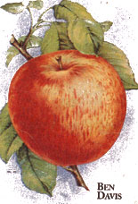 |
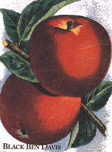 |
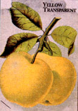 |
|
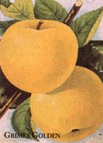 |
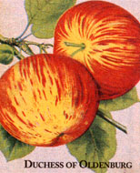 |
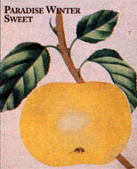 |
|
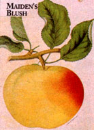 |
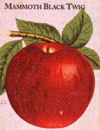 |
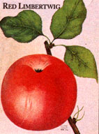 |
|
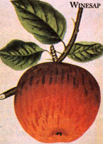 |
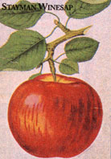 |
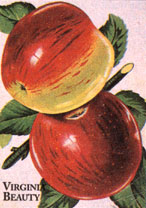 |
|
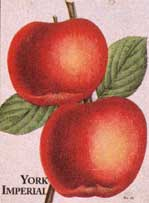 |
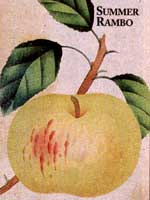 |
|